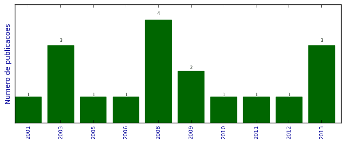

UFSM - Análise do Lattes
Artigos completos publicados em periódicos

Número total de itens: 18
(A1: 0, A2: 0, B1: 0, B2: 0, B3: 1, B4: 2, B5: 6, C: 6, Qualis não identificado: 3)
Legenda Qualis:
- Publicação para a qual o nome exato do Qualis foi identificado: Qualis <estrato>
- Publicação para a qual um nome similar (não exato) do Qualis foi identificado: Qualis <estrato> (nome similar)
- Publicação para a qual nenhum nome do Qualis foi identificado: Qualis não identificado (nome usado na busca)
2013
| 1. | AUGUSTIN, I.. Computação Ubíqua: a terceira onda da computação. Revista Fontes. v. 10, p. 61-64, 2013. [ citações Google Scholar | citações Microsoft Acadêmico | busca Google ] Qualis: Não identificado (Revista Fontes) |
| 2. | Machado. A ; AUGUSTIN, I.. Sistema Pervasivo de Informação em Saúde Projetado para ser Programado pelo Usuário Clínico. Revista de Informática Teórica e Aplicada: RITA. v. 20, p. 49-64, 2013. [ citações Google Scholar | citações Microsoft Acadêmico | busca Google ] Qualis: B4 |
| 3. | MARAN, VINÍCIUS ; AUGUSTIN, IARA ; LIBRELOTTO, GIOVANI RUBERT ; SACCOL, DEISE DE BRUM. Uma definição ontológica de elementos de contexto relevantes na adaptação de documentos em ambientes hospitalares pervasivos. Revista Brasileira de Computação Aplicada. v. 5, p. 26-41, 2013.  [ citações Google Scholar | citações Microsoft Acadêmico | busca Google ] Qualis: B5 |
2012
| 1. | PEREIRA, A. ; FACCIN, L. F. ; LIBRELOTTO, Giovani R. ; Librelotto, G.R. ; AUGUSTIN, I.. Uma Ontologia para um Sistema de Recomendação de Materiais Didáticos em Educação a Distância Sensível ao Estado Afetivo do Aluno. Revista do CCEI. v. 16, p. 324-341, 2012. [ citações Google Scholar | citações Microsoft Acadêmico | busca Google ] Qualis: B5 |
2011
| 1. | MACEDO, R. T. ; FIORIN, A. ; LIBRELOTTO, Giovani R. ; LIBRELOTTO, Giovani R. ; AUGUSTIN, I. ; NUNES, R. C.. O impacto da Web 3.0 nas políticas de controle de acesso a internet. Revista do CCEI. v. 15, p. 169-185, 2011. [ citações Google Scholar | citações Microsoft Acadêmico | busca Google ] Qualis: B5 |
2010
| 1. | VICENTINI, Caroline F. ; MACHADO, A. ; AUGUSTIN, I.. PEHS Arquitetura de um Sistema de Informação Pervasivo para Auxílio às Atividades Clínicas. Revista Brasileira de Computação Aplicada. v. 2, p. 69-80, 2010. [ citações Google Scholar | citações Microsoft Acadêmico | busca Google ] Qualis: B5 |
2009
| 1. | Librelotto, G. R. ; GASSEN, J. B. ; FREITAS, L. ; AUGUSTIN, I.. Geração de Topic Maps Dirigidos por Ontologias para a Computação Sensível ao Contexto. Revista do CCEI. v. 13, p. 469-479, 2009. [ citações Google Scholar | citações Microsoft Acadêmico | busca Google ] Qualis: B5 |
| 2. | Librelotto, G. R. ; GASSEN, J. B. ; VIZZOTTO, J. K. ; AUGUSTIN, I.. Aplicando o OntoHealth para o Processamento e Consultas de Ontologias para Ambientes Hospitalares Pervasivos. iSys: Revista Brasileira de Sistemas de Informação. v. 2, p. 51-60, 2009. [ citações Google Scholar | citações Microsoft Acadêmico | busca Google ] Qualis: B3 |
2008
| 1. | AUGUSTIN, I. ; VICENTINI, Caroline F. ; AVELAR, Francisco Tiago ; LIMA, João Carlos Damasceno. Emprego de Código de Barras Bidimensionais para Conferência da Autenticidade de Certificados Digitais. Disciplinarum Scientia. Série Ciências Exatas. v. 1, p. 1-8, 2008. [ citações Google Scholar | citações Microsoft Acadêmico | busca Google ] Qualis: C (Disciplinarum Scientia. Série Ciências Naturais e Tecnológicas) |
| 2. | LIBRELOTTO, Giovani R. ; FREITAS, L. O. ; GASSEN, J. B. ; SILVEIRA, M. C. ; TURCHETTI, Rogério Correa ; SILVA, F. L. ; AUGUSTIN, I.. Uma Ferramenta para o Processamento da Representação do Domínio de Atividades Médicas. Hífen (Uruguaiana). v. 32, p. 25-32, 2008. [ citações Google Scholar | citações Microsoft Acadêmico | busca Google ] Qualis: C (Hífen (Uruguaiana. Online)) |
| 3. | ROCHA, C. C. ; VIERA, Matheus Anversa ; VIERA, Matheus Anversa ; OLIVEIRA, R. L. ; STEIN, B. O. ; AUGUSTIN, I. ; LIMA, J. C. D.. Projeto CONVERGE UFSM: Rede de Sensores-Atuadores para Controle de Acesso em Laboratórios Usando VoIP e Rede Sem Fio.. Disciplinarum Scientia. Série Ciências Exatas (Cessou em 2001. Cont. 1981-2841 Disciplinarum Scientia. Série Ciências Naturais e Tecnológicas). v. 1, p. 9-14, 2008. [ citações Google Scholar | citações Microsoft Acadêmico | busca Google ] Qualis: C (Disciplinarum Scientia. Série Ciências Naturais e Tecnológicas) |
| 4. | ROCHA, Cristiano Cortez da ; VIERA, Matheus Anversa ; OLIVEIRA, Rodolfo Leffa ; STEIN, Benhur Oliveira ; AUGUSTIN, I. ; LIMA, João Carlos Damasceno. Projeto CONVERGE UFSM: Rede de Sensores-Atuadores para Controle de Acesso em Laboratórios Usando VoIP e Rede Sem Fio. Disciplinarum Scientia. Série Ciências Exatas. v. 1, p. 9-14, 2008. [ citações Google Scholar | citações Microsoft Acadêmico | busca Google ] Qualis: C (Disciplinarum Scientia. Série Ciências Naturais e Tecnológicas) |
2006
| 1. | AUGUSTIN, I. ; YAMIN, Adenauer Correa ; SILVA, Luciano Cavalheiro da ; REAL, Rodrigo Araujo ; FRAINER, Gustavo ; GEYER, Cláudio F Resin. ISAMadapt: Abstractions and Tools for Designing General-Purpose Pervasive Applications. Software Practice Experience Special Issue. 2006. [ citações Google Scholar | citações Microsoft Acadêmico | busca Google ] Qualis: Não identificado (Software Practice Experience Special Issue) |
2005
| 1. | YAMIN, Adenauer Correa ; AUGUSTIN, I. ; BARBOSA, Jorge V ; GEYER, Cláudio Resin. ISAM - a Software Architecture for Pervasive Computing. Clei Electronic Journal. v. 8, n. 1, 2005. [ citações Google Scholar | citações Microsoft Acadêmico | busca Google ] Qualis: B5 (CLEI Electronic Journal) |
2003
| 1. | AUGUSTIN, I. ; YAMIN, Adenauer Correa ; SILVA, Luciano Cavalheiro da ; REAL, Rodrigo Araujo ; BARBOSA, Jorge V ; GEYER, Cláudio F Resin. ISAMadapt: ambiente de desenvolvimento de aplicações para o paradigma da pervasive computing.. Cadernos de Informática (UFRGS), Porto Alegre. v. 3, n. 1, p. 109-114, 2003. [ citações Google Scholar | citações Microsoft Acadêmico | busca Google ] Qualis: C (Cadernos de Informática (UFRGS)) |
| 2. | YAMIN, Adenauer ; AUGUSTIN, I. ; BARBOSA, Jorge V ; SILVA, Luciano Cavalheiro ; REAL, R. ; GEYER, Cláudio F Resin. Towards Merging Context-aware, Mobile and Grid Computing. Journal Of High Performance Computing Application, London. v. 17, n. 2, p. 191-203, 2003. [ citações Google Scholar | citações Microsoft Acadêmico | busca Google ] Qualis: Não identificado (Journal Of High Performance Computing Application, London) |
| 3. | YAMIN, Adenauer Correa ; AUGUSTIN, I. ; SILVA, Luciano Cavalheiro da ; REAL, Rodrigo Araujo ; BARBOSA, Jorge V ; GEYER, Cláudio F Resin. EXEHDA: um ambiente de execução para adaptação dinâmica ao contexto de aplicações na pervasive computing. Cadernos de Informática (UFRGS), Porto Alegre. v. 3, n. 1, p. 115-120, 2003. [ citações Google Scholar | citações Microsoft Acadêmico | busca Google ] Qualis: C (Cadernos de Informática (UFRGS)) |
2001
| 1. | AUGUSTIN, I. ; YAMIN, Adenauer Correa ; GEYER, Cláudio F Resin ; BARBOSA, Jorge V ; CAVALHEIRO, G. H.. ISAM, um Middleware para Aplicações Móveis Distribuídas. Rita Revista de Informática Teórica e Aplicada, Porto Alegre, RS. v. VIII, n. 2, p. 1-12, 2001. [ citações Google Scholar | citações Microsoft Acadêmico | busca Google ] Qualis: B4 (Revista de Informática Teórica e Aplicada: RITA) |
(*) Relatório criado com produções desde 1999 até HOJE
Data de processamento: 02/04/2014 18:12:47